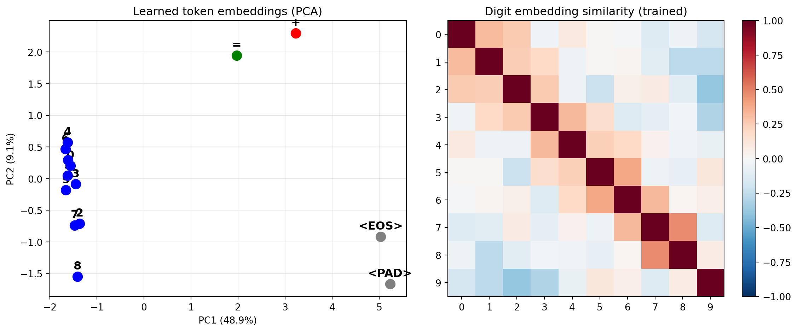

The model’s learned representations are interpretable. Attention patterns show column alignment and carry propagation. Trained embeddings cluster digits with similar arithmetic roles. This isn’t a black box — the internal structure mirrors the algorithm.
We retrain the model from scratch with a fresh random seed — this ensures a clean state with no leftover optimizer artifacts from Chapter 3.
from _common import*torch.manual_seed(42)N_DIGITS =3SEQ_LEN =2* N_DIGITS +2+ N_DIGITS +2# Rebuild and retrain the model (or load from previous chapter)model = AdditionTransformer( vocab_size=VOCAB_SIZE, d_model=32, d_ff=64, n_layers=2, max_seq_len=SEQ_LEN).to(DEVICE)train_X, train_Y = make_addition_dataset(50000, n_digits=N_DIGITS, seed=42)test_X, test_Y = make_addition_dataset(10000, n_digits=N_DIGITS, seed=123)answer_start =2* N_DIGITS +1print("Training model for inspection...")history = train_model( model, train_X, train_Y, test_X, test_Y, answer_start=answer_start, epochs=150, batch_size=512, lr=0.01, warmup_steps=200, log_every=20)
Training model for inspection...
Epoch 1 | Loss: 6.3898 | Test accuracy: 0.1%
Epoch 20 | Loss: 1.1542 | Test accuracy: 10.1%
Epoch 40 | Loss: 0.9606 | Test accuracy: 100.0%
Epoch 60 | Loss: 0.9602 | Test accuracy: 100.0%
Epoch 80 | Loss: 0.9600 | Test accuracy: 100.0%
Epoch 100 | Loss: 0.9598 | Test accuracy: 100.0%
Epoch 120 | Loss: 0.9594 | Test accuracy: 100.0%
Epoch 140 | Loss: 0.9592 | Test accuracy: 100.0%
4.1 Attention heatmaps
TipPredict before you look
For 123 + 456 = 9750<EOS> (ones-first output), think about what the attention patterns should look like if the model has learned the correct algorithm:
Position 8 (the 9, ones digit of the sum): which input positions should it attend to? (Hint: which two positions hold the ones digits of the operands?)
Position 9 (the 7, tens digit): which positions should it attend to? Does it also need information from position 8 (the ones digit it already predicted)?
Should layer 1 and layer 2 show the same pattern, or different? Think about the division of labor: one layer could handle column alignment (finding the right input digits), and another could handle carry propagation (checking whether the previous column overflowed).
Write down your predictions, then compare to the actual heatmaps below.
Now we can see what the model actually learned vs. the ideal pattern from Chapter 2. Each heatmap is a matrix where row \(i\), column \(j\) shows how much position \(i\) attends to position \(j\). Bright = high attention weight. The red dashed line separates input positions (left/above) from output positions (right/below).
What to look for (focus on the rows below the red line — those are output positions):
Layer 1 typically handles column alignment: each output digit attends to the corresponding input digits (ones to ones, tens to tens). Look for bright spots where an output row crosses the correct input columns.
Layer 2 handles carry propagation: output digits look at adjacent output positions to check whether a carry is needed. Look for attention between consecutive output positions.
999+001 (cascading carries) should show more complex layer-2 patterns than 123+456 (no carries), because carries must ripple across all three columns.
NoteConnection: Interpretability and trust
Verifying that attention patterns match the expected algorithm is mechanistic interpretability. We’re not just measuring accuracy — we’re confirming how the model computes its answers. This matters when using transformers in high-stakes settings: a model that gets the right answer for the wrong reason (e.g., memorizing training examples rather than learning column addition) will fail on out-of-distribution inputs.
The same principle applies when using LLMs as components in statistical pipelines. If you’re generating synthetic student responses, you want to verify that the model attends to the relevant parts of the problem — not that it produces plausible-looking text by pattern matching. Attention maps are one of the few tools that let you check this directly.
4.2 Learned token embeddings
Before training (Chapter 2), digit embeddings were random with no meaningful similarities. After training, we expect clustering by arithmetic role — digits that behave similarly during carry computation (e.g., 8 and 9 frequently trigger carries) should end up nearby, while digits that rarely cause carries (0, 1) should separate.
from sklearn.decomposition import PCAtrained_embs = model.token_emb.weight.detach().cpu().numpy()pca = PCA(n_components=2)embs_2d = pca.fit_transform(trained_embs)fig, axes = plt.subplots(1, 2, figsize=(12, 5))# PCA scatterfor i inrange(VOCAB_SIZE): label = VOCAB_INV[i] color ='blue'if i <10else ('red'if label =='+'else ('green'if label =='='else'gray')) axes[0].scatter(embs_2d[i, 0], embs_2d[i, 1], c=color, s=100, zorder=5) axes[0].annotate(label, (embs_2d[i, 0], embs_2d[i, 1]), fontsize=12, fontweight='bold', ha='center', va='bottom', textcoords='offset points', xytext=(0, 5))axes[0].set_title('Learned token embeddings (PCA)')axes[0].set_xlabel(f'PC1 ({pca.explained_variance_ratio_[0]:.1%})')axes[0].set_ylabel(f'PC2 ({pca.explained_variance_ratio_[1]:.1%})')axes[0].grid(True, alpha=0.3)# Cosine similaritydigit_embs = model.token_emb.weight[:10].detach().cpu()d_norms = digit_embs / digit_embs.norm(dim=1, keepdim=True)sim = (d_norms @ d_norms.T).numpy()im = axes[1].imshow(sim, cmap='RdBu_r', vmin=-1, vmax=1)axes[1].set_xticks(range(10)); axes[1].set_yticks(range(10))axes[1].set_xticklabels(range(10)); axes[1].set_yticklabels(range(10))axes[1].set_title('Digit embedding similarity (trained)')plt.colorbar(im, ax=axes[1])plt.tight_layout()plt.show()print("Compare to the random initialization in Chapter 2.")print("Digits that play similar arithmetic roles may cluster.")

Compare to the random initialization in Chapter 2.
Digits that play similar arithmetic roles may cluster.
Compare this to the random initialization in Chapter 2 — the structure here was learned entirely through gradient descent. Check the PCA axis labels: the percentage of variance explained tells you how much of the embedding geometry is captured in these two dimensions.
4.3 Learned positional embeddings
Positions with the same computational role should be similar after training — for example, position 2 (ones of operand A) and position 6 (ones of operand B) both feed into the ones-digit output.
Red line: input/output boundary.
Positions that play similar roles (both 'ones column') may cluster.
TipCheck your understanding
Do arithmetically close digits (4, 5) end up close in embedding space? Or is the clustering based on something else — perhaps digits that play similar roles in carry computation (0 and 9 behave differently from 4 and 5 when it comes to carries)? Look at the PCA plot and similarity matrix and describe the structure you see.
What would the position similarity matrix look like if positions didn’t matter? (Hint: if the model treated all positions interchangeably, what would the learned position embeddings converge to?) What does the actual structure tell you about which positions the model treats as similar?
How much variance do the first two PCA components explain? (Check the axis labels.) What does that tell you about the effective dimensionality of the learned embeddings? If two components explain 90% of the variance, the embeddings live in a roughly 2D subspace of the 32-dimensional space.